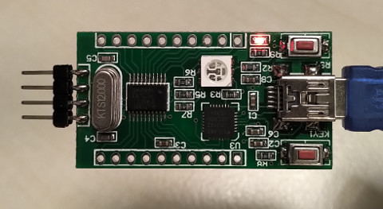
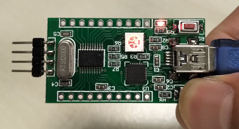

https://github.com/BakaOsaka/LPC810-ASM
https://studio.segger.com/packages/LPC800/CMSIS/Documents/UM10601.pdf
Register

main.S
參考資訊：
https://github.com/BakaOsaka/LPC810-ASM
https://studio.segger.com/packages/LPC800/CMSIS/Documents/UM10601.pdf
Register
main.S
.cpu cortex-m0
.thumb
.equ GPIO_DIR0, 0xa0002000
.equ GPIO_PIN0, 0xa0002100
.equ GPIO_SET0, 0xa0002200
.equ GPIO_CLR0, 0xa0002280
.equ BIT1, 1
.equ BIT7, 7
.equ BIT16, 16
.equ BIT17, 17
.thumb_func
.global _start
_start:
.word 0x10000400 @ stacktop
.word reset @ reset
.word hang @ nmi
.word hang @ hardfault
.word hang @ reserved
.word hang @ reserved
.word hang @ reserved
.word hang @ reserved
.word hang @ reserved
.word hang @ reserved
.word hang @ reserved
.word hang @ svcall
.word hang @ reserved
.word hang @ reserved
.word hang @ pendsv
.word hang @ systick
.thumb_func
reset:
ldr r1, =((1 << BIT7) | (1 << BIT16) | (1 << BIT17))
ldr r0, =GPIO_DIR0
str r1, [r0]
ldr r0, =GPIO_SET0
str r1, [r0]
loop:
ldr r0, =GPIO_PIN0
ldr r0, [r0]
ldr r1, =(1 << BIT1)
and r0, r1
cmp r0, #0
beq 1f
ldr r0, =GPIO_SET0
ldr r1, =(1 << BIT7)
str r1, [r0]
b loop
1:
ldr r0, =GPIO_CLR0
ldr r1, =(1 << BIT7)
str r1, [r0]
b loop
hang:
b .
.end
完成

